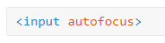
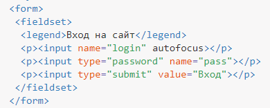
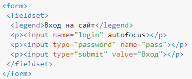
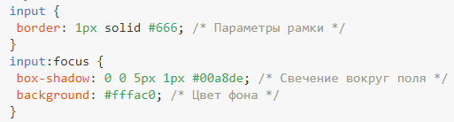

Автофокус
Фокус - это активность элемента формы, позволяющая производить с ним какие-то действия. Для текстового поля можно вводить текст, для списка выбирать пункт с помощью клавиатуры и др. Автофокус — это автоматически установленный фокус поля формы. К примеру, при открытии google.ru вы можете сразу набирать текст в строке поиска без лишних манипуляций с мышью и клавиатурой.
Автофокус создаётся с помощью атрибута autofocus, который можно добавлять к следующим элементам : <button>, <input>, <select>, <textarea>. Для текстового поля синтаксис такой.

На странице должен быть только один элемент с автофокусом.
В примере 1 показано создание формы авторизации с автофокусом.
Браузер обычно выделяет поле с фокусом рамкой.
Пример 1. Использование автофокуса

Поле с фокусом можно изменить через стили воспользовавшись псевдоклассом :focus, добавляя его к селектору input. Код HTML останется неизменным, появится только блок со стилями (пример 2).
Как только поле получает фокус или, другими словами, в него можно вводить текст, то цвет фона у поля меняется и вокруг появляется голубое свечение. Оно сделано с помощью тени соответствующего цвета через свойство box-shadow.
Пример 2. Изменение вида поля с фокусом
 